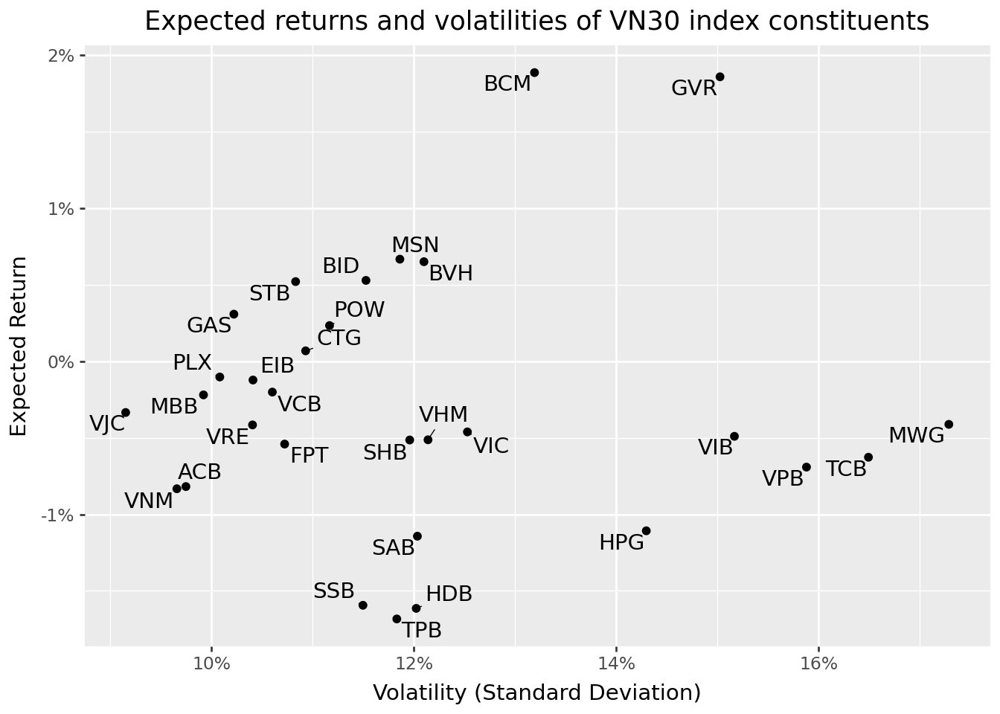

import pandas as pd
import numpy as np
import tidyfinance as tf
from plotnine import *
from mizani.formatters import percent_format
from adjustText import adjust_text8 Lý thuyết danh mục đầu tư hiện đại
Trong chương trước, chúng ta đã trình bày cách tải xuống và phân tích dữ liệu thị trường chứng khoán với các số liệu và thống kê tóm tắt. Giờ đây, chúng ta chuyển sang một trong những câu hỏi cơ bản nhất trong lĩnh vực tài chính: Làm thế nào một nhà đầu tư nên phân bổ tài sản của mình vào các loại tài sản khác nhau về lợi nhuận kỳ vọng, phương sai và tương quan để tối ưu hóa hiệu suất danh mục đầu tư?
Thoạt nhìn, câu hỏi này có vẻ đơn giản. Tại sao không đầu tư tất cả vào loại tài sản có tỷ suất lợi nhuận kỳ vọng cao nhất? Câu trả lời nằm ở một nhận định sâu sắc đã làm thay đổi nền kinh tế tài chính: rủi ro rất quan trọng, và nó có thể được quản lý thông qua đa dạng hóa.
Lý thuyết danh mục đầu tư hiện đại (MPT), được giới thiệu bởi Markowitz năm 1952, đã cách mạng hóa việc ra quyết định đầu tư bằng cách chính thức hóa sự đánh đổi giữa rủi ro và lợi nhuận kỳ vọng. Trước Markowitz, các nhà đầu tư chủ yếu nghĩ về rủi ro trên cơ sở từng chứng khoán riêng lẻ. Thiên tài của Markowitz là nhận ra rằng điều quan trọng không phải là rủi ro của từng chứng khoán riêng lẻ, mà là cách chúng đóng góp vào rủi ro của toàn bộ danh mục đầu tư. Nhận định này có tầm ảnh hưởng lớn đến mức đã giúp ông giành được Giải thưởng Khoa học Kinh tế của Ngân hàng Trung ương Thụy Điển năm 1990 và đặt nền móng cho phần lớn ngành tài chính hiện đại.
8.0.1 Nhận định cốt lõi: Đa dạng hóa như một bữa trưa miễn phí
Lý thuyết danh mục đầu tư hiện đại (MPT) dựa trên một sự thật toán học quan trọng: rủi ro danh mục đầu tư không chỉ phụ thuộc vào sự biến động của từng tài sản riêng lẻ mà còn phụ thuộc vào mối tương quan giữa lợi nhuận của các tài sản đó. Hiểu biết này cho thấy sức mạnh của việc đa dạng hóa – kết hợp các tài sản có lợi nhuận không biến động hoàn toàn đồng bộ có thể giảm rủi ro danh mục đầu tư tổng thể mà không nhất thiết phải hy sinh lợi nhuận kỳ vọng.
Hãy xem xét một ví dụ đơn giản: Giả sử bạn điều hành một doanh nghiệp bán cả kem chống nắng và ô dù. Vào những ngày nắng, doanh số bán kem chống nắng tăng mạnh nhưng doanh số bán ô dù lại giảm; vào những ngày mưa, điều ngược lại xảy ra. Bằng cách bán cả hai sản phẩm, tổng doanh thu của bạn trở nên ổn định hơn so với việc chỉ bán một sản phẩm. “Mối tương quan” giữa doanh số bán kem chống nắng và ô dù là âm, và việc kết hợp chúng làm giảm sự biến động của tổng thu nhập. Đây chính xác là logic đằng sau việc đa dạng hóa danh mục đầu tư.
Ví dụ về giỏ trái cây mang đến một góc nhìn khác: Nếu bạn chỉ có táo và chúng bị hỏng, bạn sẽ mất tất cả. Với nhiều loại trái cây khác nhau, một số có thể bị hỏng, nhưng những loại khác sẽ vẫn tươi ngon. Đa dạng hóa cung cấp sự bảo hiểm chống lại những rủi ro đặc thù của từng loại tài sản riêng lẻ.
8.0.2 Khung trung bình-phương sai
Cốt lõi của MPT là phân tích phương sai trung bình, đánh giá danh mục đầu tư dựa trên hai khía cạnh:
- Lợi nhuận kỳ vọng (trung bình): Lợi nhuận trung bình dự kiến thu được từ việc nắm giữ danh mục đầu tư.
- Rủi ro (phương sai): Sự phân tán của các khoản lợi nhuận có thể có xung quanh giá trị kỳ vọng.
Giả định chính là các nhà đầu tư chỉ quan tâm đến hai thời điểm này trong phân phối lợi nhuận. Giả định này hoàn toàn chính xác nếu lợi nhuận được phân phối chuẩn, hoặc nếu các nhà đầu tư có hàm tiện ích bậc hai. Ngay cả khi các điều kiện này không hoàn toàn đúng, phân tích phương sai trung bình thường cung cấp một phép xấp xỉ tốt cho việc lựa chọn danh mục đầu tư tối ưu.
Bằng cách cân bằng giữa lợi nhuận kỳ vọng và rủi ro, nhà đầu tư có thể xây dựng danh mục đầu tư nhằm tối đa hóa lợi nhuận kỳ vọng ở mức rủi ro nhất định, hoặc giảm thiểu rủi ro ở mức lợi nhuận kỳ vọng mong muốn. Trong chương này, chúng ta sẽ phân tích và trình bày cách đưa ra các quyết định tối ưu về danh mục đầu tư, đồng thời áp dụng phương pháp trung bình-phương sai vào tính toán.
8.1 Vũ trụ tài sản: Thiết lập vấn đề
Giả sử \(N\) các tài sản rủi ro khác nhau có sẵn cho nhà đầu tư. Mỗi tài sản \(i\) được đặc trưng bởi:
- Lợi nhuận kỳ vọng \(\mu_i\): Lợi nhuận dự kiến từ việc nắm giữ tài sản trong một khoảng thời gian
- Phương sai \(\sigma_i^2\): Sự phân tán của lợi nhuận xung quanh giá trị trung bình
- Hiệp phương sai \(\sigma_{ij}\): Mức độ lợi nhuận của tài sản \(i\) di chuyển cùng với lợi nhuận của tài sản \(j\)
Nhà đầu tư chọn trọng số danh mục đầu tư \(\omega_i\) cho mỗi tài sản \(i\). Những trọng số này đại diện cho phần của tổng tài sản được đầu tư vào mỗi tài sản. Chúng ta áp đặt ràng buộc rằng trọng số tổng thành một:
\[ \sum_{i=1}^N \omega_i = 1 \]
“Hạn chế ngân sách” này đảm bảo rằng nhà đầu tư được đầu tư đầy đủ — không có lựa chọn bên ngoài như giữ tiền dưới nệm. Lưu ý rằng chúng tôi cho phép trọng số âm (bán khống) hoặc lớn hơn một (đòn bẩy), mặc dù trên thực tế, các vị thế này có thể gặp phải những hạn chế.
8.1.1 Hai giai đoạn lựa chọn danh mục đầu tư
Theo Markowitz (1952), lựa chọn danh mục đầu tư bao gồm hai giai đoạn riêng biệt:
Ước tính: Hình thành kỳ vọng về hiệu suất bảo mật trong tương lai dựa trên quan sát, kinh nghiệm và lý luận kinh tế
Tối ưu hóa: Sử dụng những kỳ vọng này để chọn danh mục đầu tư tối ưu
Trong thực tế, các giai đoạn này không thể tách rời hoàn toàn. Giai đoạn ước tính xác định các đầu vào (\(\mu\), \(\Sigma\)) đưa vào giai đoạn tối ưu hóa. Ước tính kém dẫn đến lựa chọn danh mục đầu tư kém, bất kể quy trình tối ưu hóa phức tạp như thế nào.
Để giữ cho mọi thứ rõ ràng về mặt khái niệm, chúng tôi tập trung chủ yếu vào giai đoạn tối ưu hóa trong chương này. Chúng tôi xử lý lợi nhuận dự kiến và ma trận phương sai-hiệp phương sai như đã biết, sử dụng dữ liệu lịch sử để tính toán proxy hợp lý. Trong các chương sau, chúng tôi đề cập đến những thách thức đáng kể phát sinh từ sự không chắc chắn của ước tính.
8.1.2 Tải và chuẩn bị dữ liệu
Chúng tôi làm việc với các thành phần của chỉ số VN30 – 30 cổ phiếu lớn nhất và có tính thanh khoản cao nhất trên Sở Giao dịch Chứng khoán Thành phố Hồ Chí Minh Việt Nam. Điều này cung cấp một vũ trụ tài sản thực tế cho một nhà đầu tư Việt Nam trong nước.
vn30_symbols = [
"ACB","BCM","BID","BVH","CTG","FPT","GAS","GVR","HDB","HPG",
"MBB","MSN","MWG","PLX","POW","SAB","SHB","SSB","STB","TCB",
"TPB","VCB","VHM","VIB","VIC","VJC","VNM","VPB","VRE","EIB"
]Chúng ta tải dữ liệu giá lịch sử:
import pandas as pd
from io import BytesIO
import datetime as dt
import os
import boto3
from botocore.client import Config
class ConnectMinio:
def __init__(self):
self.MINIO_ENDPOINT = os.environ["MINIO_ENDPOINT"]
self.MINIO_ACCESS_KEY = os.environ["MINIO_ACCESS_KEY"]
self.MINIO_SECRET_KEY = os.environ["MINIO_SECRET_KEY"]
self.REGION = os.getenv("MINIO_REGION", "us-east-1")
self.s3 = boto3.client(
"s3",
endpoint_url=self.MINIO_ENDPOINT,
aws_access_key_id=self.MINIO_ACCESS_KEY,
aws_secret_access_key=self.MINIO_SECRET_KEY,
region_name=self.REGION,
config=Config(signature_version="s3v4"),
)
def test_connection(self):
resp = self.s3.list_buckets()
print("Connected. Buckets:")
for b in resp.get("Buckets", []):
print(" -", b["Name"])
conn = ConnectMinio()
s3 = conn.s3
conn.test_connection()
bucket_name = os.environ["MINIO_BUCKET"]
prices = pd.read_csv(
BytesIO(
s3.get_object(
Bucket=bucket_name,
Key="historycal_price/dataset_historical_price.csv"
)["Body"].read()
),
low_memory=False
)
prices["date"] = pd.to_datetime(prices["date"])
prices["adjusted_close"] = prices["close_price"] * prices["adj_ratio"]
prices = prices.rename(columns={
"vol_total": "volume",
"open_price": "open",
"low_price": "low",
"high_price": "high",
"close_price": "close"
})
prices = prices.sort_values(["symbol", "date"])Connected. Buckets:
- dsteam-data
- rawbctcChúng ta lọc để chỉ giữ lại các thành phần của VN30:
prices_daily = prices[prices["symbol"].isin(vn30_symbols)]
prices_daily[["date", "symbol", "adjusted_close"]].head(3)| date | symbol | adjusted_close | |
|---|---|---|---|
| 18176 | 2010-01-04 | ACB | 329.408244 |
| 18177 | 2010-01-05 | ACB | 329.408244 |
| 18178 | 2010-01-06 | ACB | 320.258015 |
8.1.3 Tính toán lợi nhuận kỳ vọng
Lợi tức trung bình mẫu được dùng làm thước đo gần đúng cho lợi tức kỳ vọng. Đối với mỗi tài sản \(i\), chúng ta tính toán như sau:
\[ \hat{\mu}_i = \frac{1}{T} \sum_{t=1}^{T} r_{i,t} \]
trong đó \(r_{i,t}\) là lợi nhuận của tài sản \(i\) trong kỳ \(t\), và \(T\) là tổng số kỳ.
Tại sao nên sử dụng lợi nhuận hàng tháng? Mặc dù dữ liệu hàng ngày cung cấp nhiều quan sát hơn, nhưng lợi nhuận hàng tháng mang lại một số lợi thế cho việc tối ưu hóa danh mục đầu tư. Thứ nhất, lợi nhuận hàng tháng ít biến động hơn và thể hiện mối tương quan chuỗi yếu hơn. Thứ hai, việc tái cân bằng hàng tháng thực tế hơn đối với hầu hết các nhà đầu tư, tránh được chi phí giao dịch quá mức. Thứ ba, sai số ước tính trong lợi nhuận trung bình đã khá lớn — việc sử dụng dữ liệu hàng ngày không cải thiện đáng kể độ chính xác của ước tính trung bình vì lợi nhuận trung bình tỷ lệ thuận với thời gian đầu tư trong khi sai số ước tính tỷ lệ thuận với căn bậc hai của số lượng quan sát.
returns_monthly = (prices_daily
.assign(
date=prices_daily["date"].dt.to_period("M").dt.to_timestamp()
)
.groupby(["symbol", "date"], as_index=False)
.agg(adjusted_close=("adjusted_close", "last"))
.assign(
ret=lambda x: x.groupby("symbol")["adjusted_close"].pct_change()
)
)8.1.4 Tính toán độ biến động
Rủi ro của từng tài sản riêng lẻ trong MPT được định lượng bằng phương sai (\(\sigma^2_i\)) hoặc căn bậc hai của nó, tức là độ lệch chuẩn hoặc độ biến động (\(\sigma_i\)). Chúng tôi sử dụng độ lệch chuẩn mẫu làm thước đo gần đúng:
\[ \hat{\sigma}_i = \sqrt{\frac{1}{T-1} \sum_{t=1}^{T} (r_{i,t} - \hat{\mu}_i)^2} \]
Các biện pháp rủi ro thay thế tồn tại, bao gồm Giá trị rủi ro, Thiếu hụt dự kiến và các khoảnh khắc bậc cao hơn như độ lệch và xì dầu. Tuy nhiên, phương sai vẫn là thước đo công cụ trong lý thuyết danh mục đầu tư vì khả năng xử lý toán học của nó và vai trò trung tâm của phân phối chuẩn trong tài chính.
assets = (returns_monthly
.groupby("symbol", as_index=False)
.agg(
mu=("ret", "mean"),
sigma=("ret", "std")
)
)8.1.5 Hình dung sự đánh đổi giữa rủi ro và lợi nhuận
Hình 201 hiển thị lợi nhuận kỳ vọng của mỗi tài sản (trục dọc) so với độ biến động của nó (trục ngang). Không gian “trung bình - độ lệch chuẩn” này là nền tảng của lý thuyết danh mục đầu tư.
assets_figure = (
ggplot(
assets,
aes(x="sigma", y="mu", label="symbol")
)
+ geom_point()
+ geom_text(adjust_text={"arrowprops": {"arrowstyle": "-"}})
+ scale_x_continuous(labels=percent_format())
+ scale_y_continuous(labels=percent_format())
+ labs(
x="Volatility (Standard Deviation)",
y="Expected Return",
title="Expected returns and volatilities of VN30 index constituents"
)
)
assets_figure.show()
Từ hình ảnh này, ta có thể rút ra một vài nhận xét. Thứ nhất, có sự khác biệt đáng kể về cả lợi nhuận kỳ vọng và độ biến động giữa các cổ phiếu. Thứ hai, mối quan hệ giữa rủi ro và lợi nhuận không hề tuyến tính. Một số cổ phiếu có độ biến động cao lại có lợi nhuận kỳ vọng thấp hoặc thậm chí âm. Thứ ba, hầu hết các cổ phiếu riêng lẻ dường như mang lại sự cân bằng rủi ro-lợi nhuận kém. Như chúng ta sẽ thấy, danh mục đầu tư có thể cải thiện đáng kể những vị thế riêng lẻ này.
8.2 Ma trận hiệp phương sai: Nắm bắt tương tác giữa các tài sản
8.2.1 Tại sao mối tương quan lại quan trọng
Một cải tiến quan trọng của MPT là nhận ra rằng rủi ro danh mục đầu tư phụ thuộc rất nhiều vào cách các tài sản biến động cùng nhau. Ma trận hiệp phương sai \(\Sigma\) thể hiện tất cả các tương tác từng cặp giữa lợi nhuận của các tài sản.
Để hiểu tại sao hệ số tương quan lại quan trọng, hãy xem xét phương sai của danh mục đầu tư gồm hai tài sản:
\[\sigma_p^2 = \omega_1^2\sigma_1^2 + \omega_2^2\sigma_2^2 + 2\omega_1\omega_2\sigma_{12}\]
Số hạng thứ ba liên quan đến hiệp phương sai \(\sigma_{12} = \rho_{12}\sigma_1\sigma_2\), trong đó \(\rho_{12}\) là hệ số tương quan. Khi \(\rho_{12} < 1\), phương sai của danh mục đầu tư nhỏ hơn mức trung bình có trọng số của các phương sai riêng lẻ. Khi \(\rho_{12} < 0\), lợi ích đa dạng hóa thậm chí còn rõ rệt hơn.
Sự thật toán học này có ý nghĩa sâu sắc: Bạn có thể giảm rủi ro mà không làm giảm lợi nhuận kỳ vọng bằng cách kết hợp các tài sản không hoàn toàn biến động cùng chiều. Điều này đôi khi được gọi là “bữa trưa miễn phí duy nhất trong lĩnh vực tài chính”.
8.2.2 Tính toán ma trận hiệp phương sai
Chúng ta tính ma trận hiệp phương sai mẫu như sau: \[\hat{\sigma}_{ij} = \frac{1}{T-1} \sum_{t=1}^{T} (r_{i,t} - \hat{\mu}_i)(r_{j,t} - \hat{\mu}_j)\]
Đầu tiên, chúng ta định dạng lại dữ liệu lợi nhuận thành định dạng rộng hơn với tài sản được thể hiện dưới dạng các cột:
returns_wide = (returns_monthly
.pivot(index="date", columns="symbol", values="ret")
.reset_index()
)
sigma = (returns_wide
.drop(columns=["date"])
.cov()
)8.2.3 Giải thích ma trận phương sai-hiệp phương sai
Các phần tử trên đường chéo chính của ma trận \(\Sigma\) là phương sai của từng tài sản riêng lẻ. Các phần tử ngoài đường chéo chính là hiệp phương sai, có thể dương (các tài sản có xu hướng biến động cùng chiều), âm (các tài sản có xu hướng biến động ngược chiều) hoặc bằng không (không có mối quan hệ tuyến tính).
Để dễ hiểu hơn, chúng ta thường chuyển đổi hiệp phương sai thành hệ số tương quan: \[\rho_{ij} = \frac{\sigma_{ij}}{\sigma_i \sigma_j}\]
Hệ số tương quan nằm trong khoảng từ -1 đến +1, giúp việc so sánh giữa các cặp tài sản trở nên dễ dàng hơn.
Figure 8.2 minh họa ma trận hiệp phương sai dưới dạng bản đồ nhiệt.
sigma_long = (sigma
.reset_index()
.melt(id_vars="symbol", var_name="symbol_b", value_name="value")
)
sigma_long["symbol_b"] = pd.Categorical(
sigma_long["symbol_b"],
categories=sigma_long["symbol_b"].unique()[::-1],
ordered=True
)
sigma_figure = (
ggplot(
sigma_long,
aes(x="symbol", y="symbol_b", fill="value")
)
+ geom_tile()
+ labs(
x="", y="", fill="(Co-)Variance",
title="Sample variance-covariance matrix of VN30 index constituents"
)
+ scale_fill_continuous(labels=percent_format())
+ theme(axis_text_x=element_text(angle=45, hjust=1))
)
sigma_figure.show()
Biểu đồ nhiệt cho thấy các mô hình quan trọng. Đường chéo (phương sai) cho thấy cổ phiếu nào biến động mạnh nhất. Các mô hình ngoài đường chéo cho thấy cặp cổ phiếu nào có xu hướng biến động cùng chiều. Nhìn chung, cổ phiếu trong cùng một ngành có xu hướng tương quan với nhau cao hơn so với cổ phiếu từ các ngành khác.
8.3 Danh mục đầu tư có phương sai tối thiểu
8.3.1 Động lực: Giảm thiểu rủi ro như một tiêu chuẩn
Trước khi xem xét lợi nhuận kỳ vọng, hãy tìm danh mục đầu tư giảm thiểu rủi ro tối đa. Danh mục đầu tư có phương sai tối thiểu (MVP) này đóng vai trò là chuẩn mực và điểm tham chiếu quan trọng. Nó thể hiện sự lựa chọn của một nhà đầu tư cực kỳ ngại rủi ro—người chỉ quan tâm đến việc giảm thiểu biến động.
8.3.2 Bài toán tối ưu hóa
Nhà đầu tư theo phương án biến động tối thiểu giải quyết vấn đề: \[ \min_{\omega} \omega^{\prime}\Sigma\omega \]
với điều kiện tổng các trọng số bằng một:
\[ \omega^{\prime}\iota = 1 \]
trong đó \(\iota\) là một vectơ \(N \times 1\) gồm toàn số 1.
Nói cách khác: giảm thiểu sự biến động của danh mục đầu tư, với điều kiện là toàn bộ danh mục đã được đầu tư.
8.3.3 Giải pháp phân tích
Đây là một bài toán tối ưu hóa có ràng buộc kinh điển có thể giải được bằng phương pháp nhân tử Lagrange. Hàm Lagrange là:
\[ \mathcal{L} = \omega^{\prime}\Sigma\omega - \lambda(\omega^{\prime}\iota - 1) \]
Lấy điều kiện bậc nhất đối với \(\omega\): \[ \frac{\partial \mathcal{L}}{\partial \omega} = 2\Sigma\omega - \lambda\iota = 0 \]
Giải phương trình tìm \(\omega\): \[ \omega = \frac{\lambda}{2}\Sigma^{-1}\iota \]
Sử dụng ràng buộc \(\omega^{\prime}\iota = 1\) để giải tìm \(\lambda\): \[ \frac{\lambda}{2}\iota^{\prime}\Sigma^{-1}\iota = 1 \implies \frac{\lambda}{2} = \frac{1}{\iota^{\prime}\Sigma^{-1}\iota} \]
Thay thế trở lại: \[ \omega_{\text{mvp}} = \frac{\Sigma^{-1}\iota}{\iota^{\prime}\Sigma^{-1}\iota} \]
Công thức thanh lịch này cho thấy rằng trọng số phương sai tối thiểu chỉ phụ thuộc vào ma trận hiệp phương sai — lợi nhuận kỳ vọng không đóng vai trò gì. Ma trận hiệp phương sai nghịch đảo \(\Sigma^{-1}\) xác định số tiền đầu tư vào mỗi tài sản dựa trên phương sai của nó và các hiệp phương sai của nó với tất cả các tài sản khác.
8.3.4 Triển khai
iota = np.ones(sigma.shape[0])
sigma_inv = np.linalg.inv(sigma.values)
omega_mvp = (sigma_inv @ iota) / (iota @ sigma_inv @ iota)8.3.5 Trực quan hóa các trọng số phương sai tối thiểu
Figure 8.3 hiển thị trọng số danh mục đầu tư của danh mục đầu tư có phương sai tối thiểu.
assets = assets.assign(omega_mvp=omega_mvp)
assets["symbol"] = pd.Categorical(
assets["symbol"],
categories=assets.sort_values("omega_mvp")["symbol"],
ordered=True
)
omega_figure = (
ggplot(
assets,
aes(y="omega_mvp", x="symbol", fill="omega_mvp>0")
)
+ geom_col()
+ coord_flip()
+ scale_y_continuous(labels=percent_format())
+ labs(
x="",
y="Portfolio Weight",
title="Minimum-variance portfolio weights"
)
+ theme(legend_position="none")
)
omega_figure.show()
Một số đặc điểm của danh mục đầu tư có phương sai tối thiểu đáng chú ý. Thứ nhất, nhiều cổ phiếu nhận được trọng số bằng không hoặc gần bằng không. Thứ hai, một số cổ phiếu nhận được trọng số âm (vị thế bán khống). Những vị thế bán khống này không phải là kết quả tính toán, mà phản ánh nỗ lực của thuật toán tối ưu hóa nhằm khai thác các mối tương quan để giảm rủi ro. Thứ ba, trọng số khá cực đoan (cả dương lớn và âm lớn), điều này thường cho thấy sự khuếch đại lỗi ước lượng, một chủ đề mà chúng ta sẽ đề cập trong các chương sau.
8.3.6 Hiệu suất danh mục đầu tư
Hãy tính toán lợi nhuận kỳ vọng và độ biến động của danh mục đầu tư có phương sai tối thiểu:
mu = assets["mu"].values
mu_mvp = omega_mvp @ mu
sigma_mvp = np.sqrt(omega_mvp @ sigma.values @ omega_mvp)
summary_mvp = pd.DataFrame({
"mu": [mu_mvp],
"sigma": [sigma_mvp],
"type": ["Minimum-Variance Portfolio"]
})
summary_mvp| mu | sigma | type | |
|---|---|---|---|
| 0 | -0.011424 | 0.043512 | Minimum-Variance Portfolio |
mu_mvp_fmt = f"{mu_mvp:.4f}"
sigma_mvp_fmt = f"{sigma_mvp:.4f}"
print(f"The MVP return is {mu_mvp_fmt} and volatility is {sigma_mvp_fmt}.")The MVP return is -0.0114 and volatility is 0.0435.Nếu lợi nhuận kỳ vọng là âm, đây không phải là lỗi tính toán. Danh mục đầu tư có phương sai tối thiểu sẽ giảm thiểu rủi ro mà không cần quan tâm đến lợi nhuận kỳ vọng. Vì một số tài sản trong mẫu có lợi nhuận trung bình âm, nên sự kết hợp giảm thiểu rủi ro có thể kế thừa lợi nhuận kỳ vọng âm. Điều này làm nổi bật một hạn chế cơ bản của việc sử dụng giá trị trung bình mẫu trong quá khứ làm ước tính lợi nhuận kỳ vọng: chúng cực kỳ nhiễu và có thể dẫn đến kết quả không trực quan về mặt kinh tế ngay cả khi các phép toán tối ưu hóa hoạt động chính xác.
8.4 Danh mục đầu tư hiệu quả: Cân bằng rủi ro và lợi nhuận
Sự đánh đổi của nhà đầu tư
Trong hầu hết các trường hợp, việc giảm thiểu biến động không phải là mục tiêu duy nhất của nhà đầu tư. Một cách tiếp cận thực tế hơn cho phép nhà đầu tư cân nhắc giữa rủi ro và lợi nhuận kỳ vọng. Nhà đầu tư có thể sẵn sàng chấp nhận biến động danh mục đầu tư cao hơn để đổi lấy lợi nhuận kỳ vọng cao hơn.
Một danh mục đầu tư hiệu quả giảm thiểu phương sai với điều kiện đạt được ít nhất một tỷ suất lợi nhuận kỳ vọng mục tiêu \(\bar{\mu}\). Nói một cách chính thức:
\[\min_{\omega} \omega^{\prime}\Sigma\omega\]
tuân theo: \[\omega^{\prime}\iota = 1 \quad \text{(fully invested)}\] \[\omega^{\prime}\mu \geq \bar{\mu} \quad \text{(minimum return)}\]
Khi \(\bar{\mu}\) vượt quá lợi nhuận kỳ vọng của danh mục đầu tư có phương sai tối thiểu, nhà đầu tư chấp nhận rủi ro cao hơn để kiếm được lợi nhuận cao hơn.
8.4.1 Thiết lập mức trả về mục tiêu
Ví dụ, giả sử nhà đầu tư muốn kiếm được ít nhất mức lợi nhuận trung bình trong quá khứ của cổ phiếu có hiệu suất tốt nhất:
mu_bar = assets["mu"].max()
print(f"Target expected return: {mu_bar:.5f}")Target expected return: 0.01886Đây là một mục tiêu đầy tham vọng—nó có nghĩa là đạt được lợi nhuận tương đương với cổ phiếu có lợi nhuận cao nhất, đồng thời tận dụng lợi thế đa dạng hóa để giảm thiểu rủi ro.
8.4.2 Giải pháp phân tích
Bài toán tối ưu hóa có ràng buộc với bất đẳng thức về lợi nhuận kỳ vọng có thể được giải quyết bằng cách sử dụng điều kiện Karush-Kuhn-Tucker (KKT). Tại điểm tối ưu (giả sử ràng buộc lợi nhuận có hiệu lực), lời giải là:
\[\omega_{\text{efp}} = \frac{\lambda^*}{2}\left(\Sigma^{-1}\mu - \frac{D}{C}\Sigma^{-1}\iota\right)\]
Trong đó:
- \(C = \iota^{\prime}\Sigma^{-1}\iota\) (một vô hướng đo “kích thước” của ma trận hiệp phương sai nghịch đảo)
- \(D = \iota^{\prime}\Sigma^{-1}\mu\) (nắm bắt sự tương tác giữa lợi nhuận kỳ vọng và ma trận hiệp phương sai nghịch đảo)
- \(E = \mu^{\prime}\Sigma^{-1}\mu\) (đo “tín hiệu” trong lợi nhuận dự kiến có trọng số bởi hiệp phương sai nghịch đảo)
- \(\lambda^* = 2\frac{\bar{\mu} - D/C}{E - D^2/C}\) (giá bóng của ràng buộc trả về)
Ngoài ra, chúng ta có thể biểu thị danh mục đầu tư hiệu quả dưới dạng sự kết hợp tuyến tính giữa danh mục đầu tư phương sai tối thiểu và danh mục đầu tư “lợi nhuận vượt mức”:
\[\omega_{\text{efp}} = \omega_{\text{mvp}} + \frac{\lambda^*}{2}\left(\Sigma^{-1}\mu - D \cdot \omega_{\text{mvp}}\right)\]
Cách biểu diễn này cho thấy một trực giác quan trọng: danh mục đầu tư hiệu quả bắt đầu từ danh mục đầu tư có phương sai tối thiểu và nghiêng về các tài sản có lợi nhuận kỳ vọng cao hơn, với độ nghiêng được xác định bởi \(\lambda^*\).
8.4.3 Triển khai
C = iota @ sigma_inv @ iota
D = iota @ sigma_inv @ mu
E = mu @ sigma_inv @ mu
lambda_tilde = 2 * (mu_bar - D / C) / (E - (D ** 2) / C)
omega_efp = omega_mvp + (lambda_tilde / 2) * (sigma_inv @ mu - D * omega_mvp)
mu_efp = omega_efp @ mu
sigma_efp = np.sqrt(omega_efp @ sigma.values @ omega_efp)
summary_efp = pd.DataFrame({
"mu": [mu_efp],
"sigma": [sigma_efp],
"type": ["Efficient Portfolio"]
})8.4.4 So sánh các danh mục đầu tư
Figure 8.4 thể hiện cả hai danh mục đầu tư cùng với các tài sản riêng lẻ.
summaries = pd.concat(
[assets, summary_mvp, summary_efp], ignore_index=True
)
summaries_figure = (
ggplot(
summaries,
aes(x="sigma", y="mu")
)
+ geom_point(data=summaries.query("type.isna()"))
+ geom_point(data=summaries.query("type.notna()"), color="#F21A00", size=3)
+ geom_label(aes(label="type"), adjust_text={"arrowprops": {"arrowstyle": "-"}})
+ scale_x_continuous(labels=percent_format())
+ scale_y_continuous(labels=percent_format())
+ labs(
x="Volatility (Standard Deviation)",
y="Expected Return",
title="Efficient & minimum-variance portfolios"
)
)
summaries_figure.show()
Hình minh họa cho thấy lợi ích đa dạng hóa đáng kể của việc tối ưu hóa danh mục đầu tư. Danh mục đầu tư hiệu quả đạt được tỷ suất lợi nhuận kỳ vọng tương đương với cổ phiếu riêng lẻ có tỷ suất lợi nhuận cao nhất nhưng với độ biến động thấp hơn đáng kể. “Lợi ích miễn phí” từ đa dạng hóa này là nhận định cốt lõi của Lý thuyết Danh mục Đầu tư Hiện đại.
8.4.5 Vai trò của sự né tránh rủi ro
Mức lợi nhuận mục tiêu \(\bar{\mu}\) phản ánh một cách ngầm định mức độ chấp nhận rủi ro của nhà đầu tư. Những nhà đầu tư ít ngại rủi ro hơn sẽ chọn \(\bar{\mu}\) cao hơn, chấp nhận mức độ biến động lớn hơn để kiếm được lợi nhuận kỳ vọng cao hơn. Những nhà đầu tư ngại rủi ro hơn sẽ chọn \(\bar{\mu}\) gần với mức lợi nhuận kỳ vọng của danh mục đầu tư có mức biến động tối thiểu.
Tương đương, khung lý thuyết trung bình-phương sai có thể được suy ra từ các quyết định tối ưu của nhà đầu tư với hàm tiện ích trung bình-phương sai:
\[ U(\omega) = \omega^{\prime}\mu - \frac{\gamma}{2}\omega^{\prime}\Sigma\omega \]
trong đó \(\gamma\) là hệ số né tránh rủi ro tương đối. Phụ lục cho thấy có mối quan hệ một-một giữa \(\gamma\) và \(\bar{\mu}\), do đó cả hai công thức đều cho ra danh mục đầu tư hiệu quả giống hệt nhau.
8.5 Đường biên hiệu quả: Thực đơn các danh mục đầu tư tối ưu
Đường biên hiệu quả là tập hợp tất cả các danh mục đầu tư mà không có danh mục đầu tư nào khác mang lại lợi nhuận kỳ vọng cao hơn với cùng mức độ biến động hoặc thấp hơn. Về mặt hình học, nó vạch ra ranh giới trên của các tổ hợp (biến động, lợi nhuận kỳ vọng) có thể đạt được.
Mỗi nhà đầu tư lý trí theo nguyên tắc lợi nhuận trung bình-lợi nhuận nên nắm giữ danh mục đầu tư trên đường biên hiệu quả. Các danh mục đầu tư nằm dưới đường biên hiệu quả bị “chi phối”, nghĩa là tồn tại một danh mục đầu tư khác có lợi nhuận cao hơn với cùng mức rủi ro, hoặc rủi ro thấp hơn với cùng mức lợi nhuận.
8.5.1 Định lý phân tách quỹ tương hỗ
Một kết quả đáng chú ý đã đơn giản hóa việc xây dựng đường biên hiệu quả. Định lý phân tách quỹ tương hỗ (đôi khi được gọi là định lý hai quỹ) phát biểu rằng bất kỳ danh mục đầu tư hiệu quả nào cũng có thể được biểu diễn dưới dạng tổ hợp tuyến tính của bất kỳ hai danh mục đầu tư hiệu quả khác nhau nào.
Về mặt hình thức, nếu \(\omega_{\mu_1}\) và \(\omega_{\mu_2}\) là các danh mục đầu tư hiệu quả có tỷ suất sinh lời kỳ vọng lần lượt là \(\mu_1\) và \(\mu_2\), thì danh mục đầu tư đó là: \[\omega_{a\mu_1 + (1-a)\mu_2} = a \cdot \omega_{\mu_1} + (1-a) \cdot \omega_{\mu_2}\]
cũng hiệu quả và mang lại lợi nhuận kỳ vọng là \(a\mu_1 + (1-a)\mu_2\).
Kết quả này có ý nghĩa thực tiễn sâu sắc: nhà đầu tư chỉ cần tiếp cận hai “quỹ tương hỗ” hiệu quả để xây dựng bất kỳ danh mục đầu tư nào trên đường biên hiệu quả. Các quỹ cụ thể không quan trọng—bất kỳ hai danh mục đầu tư hiệu quả khác nhau nào cũng có thể trải rộng trên toàn bộ đường biên hiệu quả.
8.5.2 Chứng minh Định lý phân ly
Chứng minh này xuất phát trực tiếp từ lời giải phân tích cho các danh mục đầu tư hiệu quả. Hãy xem xét:
\[ a \cdot \omega_{\mu_1} + (1-a) \cdot \omega_{\mu_2} = \left(\frac{a\mu_1 + (1-a)\mu_2 - D/C}{E - D^2/C}\right)\left(\Sigma^{-1}\mu - \frac{D}{C}\Sigma^{-1}\iota\right) \]
Biểu thức này có dạng chính xác như danh mục đầu tư hiệu quả mang lại lợi nhuận kỳ vọng \(a\mu_1 + (1-a)\mu_2\), chứng minh định lý.
8.5.3 Tính toán đường biên hiệu quả
Sử dụng danh mục đầu tư có phương sai tối thiểu và danh mục đầu tư hiệu quả của chúng ta làm hai “quỹ”, ta có thể vạch ra toàn bộ đường biên hiệu quả:
efficient_frontier = (
pd.DataFrame({
"a": np.arange(-1, 2.01, 0.01)
})
.assign(
omega=lambda x: x["a"].map(lambda a: a * omega_efp + (1 - a) * omega_mvp)
)
.assign(
mu=lambda x: x["omega"].map(lambda w: w @ mu),
sigma=lambda x: x["omega"].map(lambda w: np.sqrt(w @ sigma @ w))
)
)Lưu ý rằng chúng ta cho phép \(a\) nằm trong khoảng từ -1 đến 2, điều này có nghĩa là một số danh mục đầu tư bao gồm việc bán khống một trong hai quỹ cơ sở và sử dụng đòn bẩy vào quỹ còn lại. Điều này vạch ra cả phần trên và phần dưới của đường hyperbol biên.
8.5.4 Trực quan hóa đường biên hiệu quả
Figure 8.5 hiển thị đường biên hiệu quả cùng với các tài sản riêng lẻ và danh mục đầu tư chuẩn.
summaries = pd.concat(
[summaries, efficient_frontier], ignore_index=True
)
summaries_figure = (
ggplot(
summaries,
aes(x="sigma", y="mu")
)
+ geom_point(data=summaries.query("type.isna()"))
+ geom_line(data=efficient_frontier, color="blue", alpha=0.7)
+ geom_point(data=summaries.query("type.notna()"), color="#F21A00", size=3)
+ geom_label(aes(label="type"), adjust_text={"arrowprops": {"arrowstyle": "-"}})
+ scale_x_continuous(labels=percent_format())
+ scale_y_continuous(labels=percent_format())
+ labs(
x="Volatility (Standard Deviation)",
y="Expected Return",
title="The Efficient Frontier and VN30 Constituents"
)
)
summaries_figure.show()
Đường biên hiệu quả có hình dạng hyperbol đặc trưng. Điểm bên trái nhất là danh mục đầu tư có phương sai tối thiểu. Di chuyển lên và sang phải dọc theo đường biên, lợi nhuận kỳ vọng tăng lên nhưng độ biến động cũng tăng theo. Phần trên của đường hyperbol (phía trên danh mục đầu tư có phương sai tối thiểu) là phần “hiệu quả” - các danh mục đầu tư này mang lại lợi nhuận cao nhất cho mỗi mức độ rủi ro. Phần dưới là phần “không hiệu quả” - các danh mục đầu tư này bị chi phối bởi hình ảnh phản chiếu của chúng ở phần trên.
Biểu đồ cũng cho thấy sự cải thiện đáng kể của việc đa dạng hóa so với việc nắm giữ cổ phiếu riêng lẻ. Gần như tất cả các cổ phiếu riêng lẻ đều nằm trong vùng biên hiệu quả, có nghĩa là các nhà đầu tư có thể đạt được cùng mức lợi nhuận kỳ vọng với rủi ro thấp hơn nhiều, hoặc lợi nhuận kỳ vọng cao hơn nhiều với cùng mức rủi ro, chỉ đơn giản bằng cách đa dạng hóa.
8.6 Những điểm chính cần ghi nhớ
Chương này giới thiệu các khái niệm của Lý thuyết Danh mục Đầu tư Hiện đại. Những điểm chính cần lưu ý là:
Rủi ro danh mục đầu tư phụ thuộc vào mối tương quan: Phương sai của danh mục đầu tư không chỉ đơn thuần là trung bình có trọng số của các phương sai riêng lẻ. Hiệp phương sai giữa các tài sản đóng vai trò quan trọng, tạo ra cơ hội đa dạng hóa.
Đa dạng hóa là “bữa trưa miễn phí duy nhất” trong tài chính: Bằng cách kết hợp các tài sản không biến động hoàn toàn cùng chiều, nhà đầu tư có thể giảm rủi ro mà không làm giảm lợi nhuận kỳ vọng. Nhận thức này là nền tảng của thực tiễn đầu tư hiện đại.
Danh mục đầu tư có phương sai tối thiểu giúp giảm thiểu rủi ro: Danh mục đầu tư này chỉ phụ thuộc vào ma trận hiệp phương sai và đóng vai trò là một chuẩn mực quan trọng. Nó thể hiện cách đầu tư ít rủi ro nhất vào các tài sản rủi ro.
Danh mục đầu tư hiệu quả cân bằng giữa rủi ro và lợi nhuận: Bằng cách chấp nhận rủi ro biến động lớn hơn, nhà đầu tư có thể kiếm được lợi nhuận kỳ vọng cao hơn. Danh mục đầu tư hiệu quả là những danh mục mang lại sự cân bằng tốt nhất có thể.
Đường biên hiệu quả đặc trưng cho các danh mục đầu tư tối ưu: Đường ranh giới này trong không gian trung bình-độ lệch chuẩn thể hiện danh sách các lựa chọn tối ưu dành cho các nhà đầu tư theo phương pháp trung bình-phương sai.
Việc tách hai quỹ giúp đơn giản hóa quá trình triển khai: Bất kỳ danh mục đầu tư hiệu quả nào cũng có thể được xây dựng từ hai danh mục đầu tư hiệu quả riêng biệt, giảm bớt gánh nặng tính toán trong việc tối ưu hóa danh mục đầu tư.
Nhìn về phía trước, một số khó khăn quan trọng phát sinh trong thực tiễn. Thứ nhất, các yếu tố đầu vào cho việc tối ưu hóa danh mục đầu tư (lợi nhuận kỳ vọng và hiệp phương sai) phải được ước tính từ dữ liệu, và sai số ước tính có thể ảnh hưởng đáng kể đến hiệu suất của danh mục đầu tư. Thứ hai, các ràng buộc thực tế như chi phí giao dịch, hạn chế bán khống và giới hạn vị thế làm thay đổi bài toán tối ưu hóa. Thứ ba, giả định rằng nhà đầu tư chỉ quan tâm đến giá trị trung bình và phương sai có thể quá hạn chế khi lợi nhuận không tuân theo phân phối chuẩn hoặc khi nhà đầu tư có sở thích phức tạp hơn. Chúng ta sẽ đề cập đến những mở rộng này trong các chương tiếp theo.